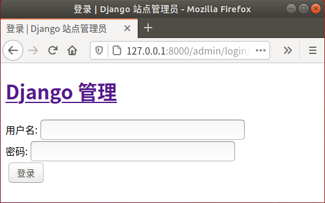

Django项目部署搭建uWSGI工作环境
在本章节，将给大家讲解一下如何部署 Django 项目到生产环境的方。项目部署是指在软件开发完毕后，将开发机器上运行的开发版软件实际安装到服务器上进行长期运行，这是使用 Django 框架进行开发的的最后一个环节，也是非常要种的一部分。本章节会介绍到 Django 项目部署的基本流程、Python Web 中 WSGI 协议的理解，然后完成搭建 WSGI 生产环境以及 Nginx 反向代理服务器的配置工作。
WSGI 协议的出现恰恰解决了上述问题，它可以让 Web 服务器知道如何去调用 Python 应用程序；让 Python 应用程序知道客户端在请求什么，以及如何返回结果给 Web 服务器，WSGI 实现了 Web 服务器与应用程序之间的交互。
Django 框架同时实现了 WSGI 的 server 和 application。其中内置的 WSGI 服务器是基于 Python 的内置模块 wsgiref 实现的，主要是添加了一些异常处理和错误记录，但是没有考虑到运行效率，故不适合在生产环境中使用，它主要被使用在开发和测试过程中。在这里进行一下简单的讲解，不作为本节的重点，在和 manage.py 同级目录下新建一个 python_webtest.py 文件，编写如下代码：
此时 uWSGI.log 会帮助我们记录 uWSGI 服务器的请求日志等等，有兴趣可以自己看一看日志内容。上述就是 uWSGI 服务器的完整部署与使用流程，不过如果这样使用的话， uWSGI 会直接暴露给客户端用户，所以它通常会和 Nginx 搭配在一起进行使用，在下一节《Django项目部署Nginx安装与配置（完结）》将给大家介绍。
1. 什么是WSGI协议
在本教程开篇我们介绍过，Django 是 Python 语言编写的 Web 框架，而我们使用 Django 编写的项目称为 Web 应用，而一个 Web 项目的运行离不开 Web 服务器，所以就需要一种规范或者协议来定义 Web 应用如何与 Web 服务器之间实现交互以及请求的接受与响应的返回，这就引出了 WSGI 协议。所以，我们就能够了解到 WSGI 协议的主要工作职责是什么了。1) 从定义层面理解WSGI协议
WSGI（Web Server Gateway Interface）即 Web 服务器网关接口，它是属于一种规范协议，它定义了 Python Web 应用程序与 Web 服务器通信的接口。为了让大家更容易理解 WSGI 的作用，我们举一个通俗易懂的例子，比如，世界上有很多国家，各个国家之间货币都不通用，当你需要到韩国旅游的时候，就需要把我们的人民币按照国际汇率标椎兑换成韩元，这样我们才可以在韩国消费，而国际汇率标准就是一套完整的规范协议准则，也就相当于本节讲到的 WSGI 协议，需要各个国家遵守。2) Python Web中WSGI协议
通过上面例子，再理解 WSGI 协议在 Python Web 中的作用就变的非常简单。Python 语言有各种各样的 Web 应用框架，如果在没有统一标准的情况下，可能需要针对每一个框架去实现各自的 Web 服务器。可想而知，如果这样的话，会给我开发者带来繁重的工作量。WSGI 协议的出现恰恰解决了上述问题，它可以让 Web 服务器知道如何去调用 Python 应用程序；让 Python 应用程序知道客户端在请求什么，以及如何返回结果给 Web 服务器，WSGI 实现了 Web 服务器与应用程序之间的交互。
2. Django内置WSGI服务器
在 WSGI 协议中定义了两个角色：一个是 Web 服务器即 server，另一个是应用程序即 application，server 需要接受来自客户端的请求，然后根据协议定义调用应用程序（application），应用程序处理请求并返回结果给 server，最终响应给客户端。Django 框架同时实现了 WSGI 的 server 和 application。其中内置的 WSGI 服务器是基于 Python 的内置模块 wsgiref 实现的，主要是添加了一些异常处理和错误记录，但是没有考虑到运行效率，故不适合在生产环境中使用，它主要被使用在开发和测试过程中。在这里进行一下简单的讲解，不作为本节的重点，在和 manage.py 同级目录下新建一个 python_webtest.py 文件，编写如下代码：
from wsgiref.simple_server import make_server
#定义服务器调用对象application
def application(environ,start_response):
"""
:param environ: #包含所有客户端的请求信息即上下文请求，application从这个参数中获取客户端请求意图
:param start_response: 一个可调用对象，用于发送http请求状态
:return: [b'Hello World!\n'] #返回可迭代对象 且必须是字节流，Http是面向字节流协议
"""
status='200 OK'
response_headers=[('Conteny-type','text/plain')] #响应头是一个列表
start_response(status,response_headers) #返回给server之前调用 start_response
return [b"Hello World!\n"]
#创建WSGI服务器，指定调用application,这里的调用对象也可以是一个类或者实例
httpeserver=make_server('127.0.0.1',8000,application)
#处理请求后退出
httpeserver.handle_request()
然后在 CMD命令行执行下面的 python python_webtest 命令，注意要在 python_webtest 对应的目录下，然后再使用 curl 命令发送请求进行测试，最终如下所示：
C:\Users\Administrator>curl -i 127.0.0.1:8000 HTTP/1.0 200 OK Date: Thu, 30 Jul 2020 08:41:45 GMT Server: WSGIServer/0.2 CPython/3.7.4 Conteny-type: text/plain Content-Length: 13 Hello World!
3. uWSGI生产环境的搭建与配置
上面介绍了 Django 的内置 WSGI 服务器的实现，但是由于 Django 并不专注于实现服务器，所以内置的 WSGI 服务器无法满足生产环境的需求，所以我们在这里要介绍另外一种 WSGI 服务器，即 uWSGI。1) uWSGI服务器简单介绍
uWSGI 是当下最流行的一种 WSGI 服务器，同样遵守 WSGI 协议。它可以与各种 Python Web 框架实现兼容，而且配置过程与使用方式都非常简单。我们之前使用 runserver 命令启动项目，通常只是在开发和测试环境中使用。当开发结束后，完善的项目代码需要在一个高效稳定的环境中运行，这时候可以使用 uWSGI，它是 WSGI 服务器的一种，它可以让 Django、Flask 等开发的 Web 应用站点运行其中。2) 安装与配置uWSGI服务器
要使用 uWSGI，首先要对它进行安装，但是这里有一点需要注意，因为项目都是部署在 Linux 系统上，所以这些操作也要在 Linux 系统上完成，笔者的 Linux 是 ubuntu 18.04，对于 Linux 操作系统安装不熟悉的同学，可参靠本网站《Linux系统安装教程（超级详细）》 ，所以我们需要将我们的项目部署在 Liunx 上。至于代码、包、模块等如何打包，将在下一节对这个过程做详细介绍，本节先学会配置 uWSGI 服务器。sudo pip3 install uwsgi
使用上述命令安装 uWSGI，安装完成后在 BookStore 项目的根目录下，新建 uwsgi.ini 配置文件（和 manage.py 文件同级目录），并在该文件中进行如下配置：[uwsgi] # 套接字方式的 IP地址:端口号 # socket=127.0.0.1:8000 # Http通信方式的 IP地址:端口号 http=127.0.0.1:8000 #上述两种方式选择其一，在使用Nginx需要使用socket # 项目当前工作目录自行配置 chdir=/home/.../.../my_projectname 这里需要换为项目文件夹的绝对路径 # 项目中wsgi.py文件的目录，相对于当前工作目录 wsgi-file=my_project/wsgi.py #是否启动主进程来管理其他进程 master=true # 进程个数，根据电脑配置设置 process=4 # 每个进程的线程个数 threads=2 # 服务的pid记录文件 pidfile=uwsgi.pid # 服务的日志文件位置 daemonize=uwsgi.log然后修改 settings.py 文件将其设置为适合线上生产环境使用，如下所示：
DEBUG=False #关闭调试模式
ALLOWED_HOSTS = ['*'] #任何ip都可以访问
3) 启动与测试uWSGI服务器
配置完成后，我们就可以使用下面的命令启动 uWSGI 了：启动 uwsgi 命令 $ cd 项目文件夹 $ sudo uwsgi --ini uwsgi.ini 停止 uwsgi 命令 $ cd 项目文件夹 $ sudo uwsgi --stop uwsgi.pid说明：当 uWSGI 启动后，当前 Django 项目的程序已变成后台守护进程，在关闭当前终端时此进程也不会停止。执行完我启动命令后，可以看到在项目的主目录下又生成了两个文件分别是 uwsgi.pid 与 uwsgi.log，它们分别用来记录，uWsgi 的进程号码 pid 与 uWSGI 的相关运行日志。启动成功的标志如下所示：
[uWSGI] getting INI configuration from uwsgi.ini
此时我们我们在没有使用 runserver 启动的情况下，可以访问 127.0.0.1:8000/admin 进行测试，你会看到，我们成功等了后台界面，如下所示：

图1：测试 uWSGI 访问页面
图1：测试 uWSGI 访问页面
关注公众号「站长严长生」，在手机上阅读所有教程，随时随地都能学习。内含一款搜索神器，免费下载全网书籍和视频。

微信扫码关注公众号